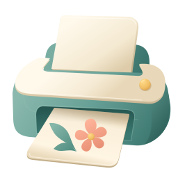

One icon: printer
Smooth SVG paths, rounded paper forms and gradients. No grain, heavy outline, embedded image or blur filter. Archived Paper Charms comparison. The app now uses a quieter Enchanted Ink printer inside a circular button.

26px
32px
48px
Button
26px
32px
48px
Button
Open the SVG. All sizes above use the same vector file. The larger view exposes the actual geometry and shading rather than adding detail that disappears at button size.